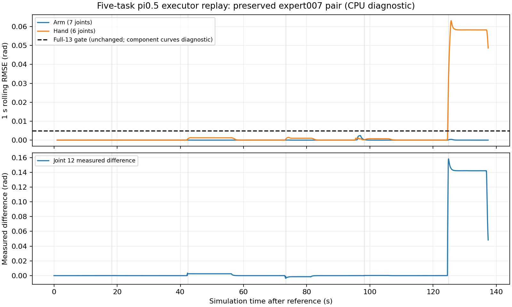

快照 2026-11-11T20:52:37.504422+00:00。由 T-939/A2 生成；原始归档已由生产方完整字节/SHA与冻结CPU判定复核，交接台没有再次运行全部物理轨迹。
仅为诊断；全部方法验收尚未完成，正式无辅助主表不变。当前 8/20 条闭合，2 路独立N1仿真在途。未满额不发布最终成功率。下表只描述已闭合的8条，不代表20条或100条成绩。
固定scene0..19、正反各10、seed0。先前4条复用已完成证据，只派发scene4..19。两个独立模型服务分别对应一个环境，没有共享可变记忆；实际交付Torch2.7.1+cu128及两路真实Native桥的五帧最终张量/动作一致性通过。Native科学文件215份保持相同，仅改变I/O命名空间和已核实的绝对环境路径。
| 冻结口径 | 已闭合成功数 | 有效数 | unknown | 有效轨迹平均阶段 | ≥3/5条数 |
|---|---|---|---|---|---|
| v1.1 execution condition | 0 | 8 | 0 | 0.500 | 0 |
| r1 | 0 | 8 | 0 | 1.250 | 2 |
| r1-released | 0 | 8 | 0 | 1.250 | 2 |
| r-max-released | 0 | 8 | 0 | 1.250 | 2 |
条件为 G90_O_rmax_S3_stepcap_nativeFF_v4_DIAGNOSTIC，480秒上限；MemoryVLA保留完整高层global_task，不注入qpos、planner或子任务。原生v1.1执行条件含已登记的非手持倾倒豁免；r1及released口径独立离线重算，不与正式原始条件合并。
首次扩充因目录嵌套漏改了ENV引用，在启动Native之前停止，0场景被消耗。失败记录保留；只修绝对路径后补一次，第二路在派发之前修正。权重、预处理、执行控制、物理、判定和seed不变。
原quintic h4入口的十份专家归档重新核验：物理五阶段10/10完成，原完整13维RMSE≤0.005仅9/10通过。单独source-encoded候选expert007也物理完成，但full13=0.012030612rad，不能算准入通过，更不是策略成功率。
原始请求目标与专家目标的误差约1e-7rad；主要分叉是附着后冻结的实测手姿，joint12贡献98.4%的平方误差，最后一次B附着相差17tick。仅作审阅的分段诊断提案已完成十份日志和CPU正反敏感性检查：未附着13维最大RMSE 0.002647724rad，附着手臂7维最大 0.000071145rad，全13维原始请求目标最大 1.40014269e-07rad。提案尚未获用户决定，未改变原门槛，未据此派发π0.5策略；如采用，所有方法统一另列诊断。

云端operation b0h8yqpfzd122v7jw3kb1ace4 最终生成job-m5n268rjd3n6，状态FAILED。API没有返回started_at，六份启动归档均缺失，具体失败阶段不能确认，未盲目补提。先前“容器启动前失败”的描述证据不足，已更正。
已有机器上的两路工作继续运行，没有新增云端建卡。首场景冷启动约15分钟，后续缓存已复用；尚未取得十分钟持续GPU利用率，不能声称达到80%。同一已授权BOS source合法续期12小时，仅ENV/600私有文件使用凭据；报告不含任何凭据。
完整压缩证据；解压SHA256 8fc9cb748599c5bd74353f7b3607d79c7fde18a2fe636eef0f9ed425a67675ed。旧四条冻结报告和历史严格结果保留。